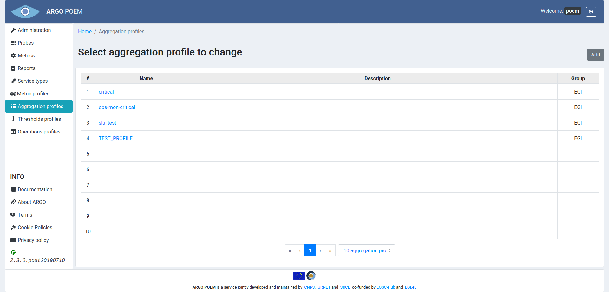
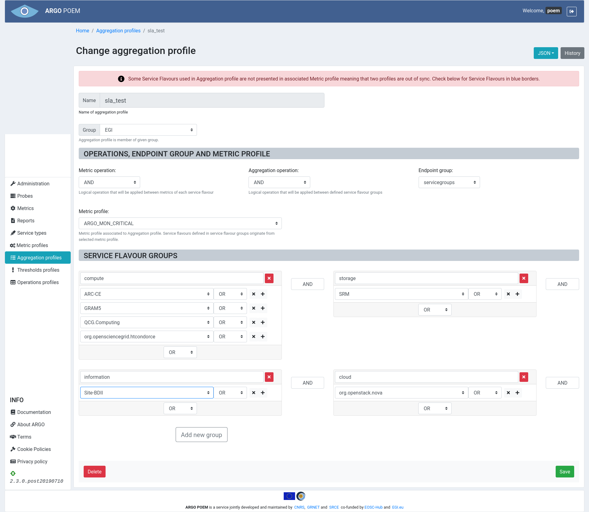

Aggregation profiles
List of aggregation profiles
Aggregations profiles page is accessible from the menu on the left side. It is shown in the image below.

Aggregation profile details
By clicking the profile name, the page of that particular profile is opened. Example is shown in the image below.

Sections
The first part is the same for all the profiles: Name and Group fields. Group field is a drop down select field and it is required, so the group of aggregations must be created beforehand.
Operations, endpoint group and metric profile
Fields Operations, Endpoint group and Metric profile are all drop down select fields. The user can choose among the existing metric profiles.
Service flavour groups
In Service flavour groups section, the user can create new groups, and delete and modify the existing ones. For adding one uses buttons with "+" sign, for deleting buttons with "x" sign. Whole group is deleted by clicking the red "x" button.
There is a validation which checks if service flavours mentioned in aggregation profile exist in the associated metric profile, and if they do not, the warning message is displayed, and the missing service flavours are marked blue (like shown in the image above).
Same as for other resources, only users with appropriate permission may modify aggregation profile. That is, users that have group of aggregation the profile belongs to assigned to them, or users with superuser permission.
Import/Export JSON
There is a feature of importing and exporting aggregation profile data in a JSON file. Data being exported (or imported) includes sections Operations, endpoint group and metric profile and Service flavor groups.
When exporting data, user clicks on JSON button, and selects Export. The file is saved as JSON with the name of the aggregation profile being exported (in this case, the name of the file would be sla_test.json).
On the other hand, when importing data, user clics on JSON button and selects Import. The data in the sections Operations, endpoint group and metric profile and Service flavour groups are then overridden by the data in the file being imported.
Aggregation profile history
By clicking History button, user can see the changes made to the profile, the time they were made, and by whom they were made.